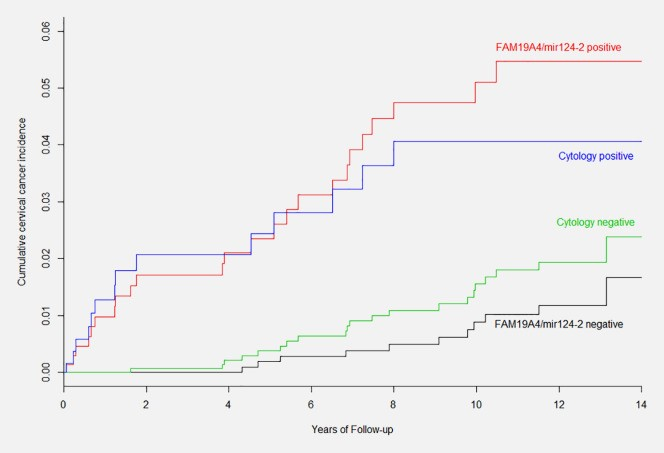

Otras pruebas de triaje
Además de las estrategias de triaje que se han explorado en las unidades anteriores, existen otras modalidades en evaluación que podrían ser parecidas o superiores pero que necesitan de más información científica en relación con su validez, precisión y replicabilidad.
Uso del genotipado extendido
El uso de la información del genotipado VPH está bien establecido para los tipos 16 y 18 (genotipado parcial) pero la información de otros tipos también podría ser de interés (genotipado extendido). Datos de diversos estudios longitudinales en Estados Unidos han puesto de manifiesto diferencias en la probabilidad de progreso de enfermedad según los tipos de VPH implicados [18].
Datos del estudio NTCC RCT, que se llevó a cabo en 9 programas organizados de cribado en Italia, mostraron que en una cohorte de 2255 mujeres los valores predictivos positivos para CIN2+ fueron en orden de importancia para los genotipos VPH33, 16 y 35 aunque el tipo más prevalente fue el VPH16.[19]. Los datos del estudio fueron interpretados como la necesidad de evaluar el riesgo de progresión según genotipos apuntando la complejidad de utilizar el genotipo como única medida de triaje.
Se observan diferencias en la probabilidad de progresión de cada tipo de VPH entre estudios. Estas pueden derivarse de múltiples aspectos como la población de estudio, el tiempo de seguimiento y el ensayo utilizado. Sin embargo, existe una buena concordancia con los tipos más relevantes para CIN3 y los detectados en carcinoma invasor.
De los 14 tipos de VPH llamados oncogénicos, los tipos de VPH 39, 51, 56, 59 y 68 tienen un potencial tan bajo de progresión que podría asumirse que se comportan como los tipos de bajo riesgo. Estos tipos de VPH pueden corresponder a más de un 20% de todos los positivos y por tanto un manejo más conservador podría ser útil para mejorar el rendimiento del cribado (reducción del número de colposcopias, por ejemplo). Por otro lado, el VPH 66 se debería de excluir de las pruebas de cribado y triaje por su escasísimo poder de progresión.
En otros estudios, Kuhn et al. [20] evaluó la opción de restringir los tipos de VPH detectados y augmentar el punto de corte para definir la positividad, observando una mejora en el valor predictivo positivo de la prueba de VPH.
Para más información sobre las diferencias en la progresión y sus implicaciones en el cribado, consultar los módulos 1 y 3.
Uso de la carga viral
Muchas de las pruebas de VPH que se utilizan transmiten los resultados en valores numéricos continuos que puede ser equivalentes a la carga viral. Muchos estudios han sugerido que una carga viral alta es un importante factor pronóstico de cáncer, indicativa de una infección persistente y asociado con tiempos de eliminación más largos. Específicamente, se ha demostrado que el riesgo de CIN2+ y CIN3+ aumenta con el aumento de la carga viral para HPV16 [21,22].
Dentro del estudio ALTS de USA se siguieron cada 6 meses a mujeres con un diagnóstico de ASC-US durante dos años [23]. El estudio evaluó la asociación de neoplasia intraepitelial cervical grados 2-3 (CIN2/3) con la carga de ADN por tipos de VPH específicos. En general, el aumento en el riesgo acumulativo de CIN2 / 3 por cada unidad de aumento en la carga viral (transformada en log10) fue estadísticamente significativo para cuatro tipos de VPH dentro de la especie 9 del género alfa:La asociación fue marginalmente significativa para el VPH33 (especie 9) y el VPH45 (especie 7) y no fue apreciable para otros tipos.
- VPH31 (índice de riesgo ajustado [HRa ajustado] = 1.32, IC95%: 1.14-1.52)
- VPH35 (HR ajustado = 1.47, IC95%: 1.23-1.76)
- VPH52 (HR ajustado = 1.14, IC95%: 1.01-1.30)
- VPH58 (HR ajustado = 1.49, IC95%: 1.23-1.82)
Los resultados de este estudio sugieren que el riesgo asociado a la carga viral de CIN2/3 depende del tipo y se limita principalmente a las especies de tipos de VPH relacionados con el VPH16 (i.e, la especie α9).
E6 y E7 oncoproteínas
Una expresión elevada de las oncoproteínas E6 y E7 está asociada al desarrollo de precáncer.
Existen diversas pruebas para determinar la expresión de estas oncoproteínas, ya sea mediante su detección directa (OncoE6 test™) o mediante el ARN mensajero como expresión de los oncogenes E6 y E7.
La detección de las oncoproteínas para los tipos VPH 16 y 18 ha proporcionado resultados más satisfactorios que la detección ampliada de oncoproteínas de hasta ocho tipos VPH. Existen diversos estudios en marcha para identificar la aplicabilidad de este tipo de análisis como triaje de VPH positivas.
ARNm
La validez del uso de pruebas de ARN mensajero para el triaje de mujeres VPH positivas se ha medido en pruebas que detectaban E6/E7 de 5 (Proofer test) o 14 (Aptima) tipos de VPH.
La prueba de ARNm de 14 tipos está más extendida, aunque principalmente como prueba de cribado primaria y/o co-test con sensibilidades del 90%, algo inferior a las pruebas de ADN pero con unas especificidades consistentemente algo más altas.
Metilación
La metilación del ADN tiene un papel particular en el desarrollo del cáncer y sus cambios se observan en muchos cánceres, incluidos los cánceres de cuello uterino.
La metilación controlada del ADN es esencial para el proceso biológico normal, como la regulación de los procesos celulares, incluido el desarrollo embrionario, la inestabilidad cromosómica y la protección contra la invasión del ADN viral extraño. Sin embargo, la metilación aberrante del ADN de los genes humanos y el genoma viral del VPH puede provocar alteraciones en las funciones de los productos génicos que regulan la supresión tumoral, la reparación del ADN, la apoptosis, la metástasis y la invasión [24,25].
La validez de las pruebas de metilación en el cribado de cáncer de cuello uterino se ha medido en múltiples estudios. Sin embargo, la interpretación de los mismos se ve dificultada por la gran variabilidad de las pruebas, cuyo resultado depende de:
Tipo de gen diana: humano o viral
Dianas de CpG del gen diana
Niveles de corte para designar como positivo o no
Diseño de estudio
Los ensayos de metilación del ADN son prometedores para la detección de CIN2+ para el triaje de mujeres con VPH positivo, ya que permiten la automatización y en muestras recogidas por la propia mujer. Hasta la fecha, ningún gen humano o viral ha mostrado una sensibilidad lo suficientemente alta como para ser un único marcador, por lo que identificar el panel óptimo de estos marcadores sigue siendo un área clave de interés.
Entre las 1.040 mujeres positivas al VPH que participaron en el ensayo POBASCAM (Países Bajos), aquellas con una prueba inicial de metilación FAM19A4 / miR-124-2 negativa tuvieron un riesgo más bajo de desarrollar cáncer de cuello uterino en los siguientes 14 años en comparación con las mujeres con un resultado de citología inicial normal (< ASC-US) (razón de riesgos = 0.74, IC95%: 0.16-1.40).
FIGURA 6 Incidencia acumulada durante 14 años de cáncer de cuello uterino entre mujeres VPH positivas estratificadas según el resultado de la prueba de metilación o citología FAM19A4 / mir124‐2 (ASCUS +) al inicio del estudio
Inspección visual con ácido acético
La inspección visual a simple vista del cuello uterino con ácido acético y/o con yodo (IVAA/IVSL, VIA/VILI en inglés) como medio para detectar el precáncer cervicouterino surgió ante la ausencia o la insuficiencia de rendimiento de los métodos de cribado tradicionales utilizados en los países de renta alta (citología seguida de colposcopia) cuando se aplicaban a los países de ingresos bajos y medios.
La IVAA tiene la ventaja de disponer de los resultados inmediatamente, lo que facilita un protocolo de detección y tratamiento, además de ser poco costosa.
Sin embargo, tiene el inconveniente de ser muy subjetiva y, en consecuencia, presenta una sensibilidad y especificidad variables para detectar el precáncer. Se ha observado una gran variabilidad en las tasas de derivación para el tratamiento cuando se utiliza la IVAA como cribado primario y como triaje de las personas positivas al VPH. En la práctica, puede resultar difícil garantizar la formación adecuada, la supervisión y la garantía de una calidad continua. Es poco probable que los programas que utilizan la IVAA cuenten con confirmación histológica lo que limita la evaluación del control de calidad.
Por ello, la OMS recomienda el uso de las pruebas del VPH en lugar de la citología o de la IVAA. Pero, incluso si se implementa la prueba del VPH en países de bajos recursos, es necesario abordar la especificidad de esta prueba. A pesar de sus limitaciones, en algunos lugares se está utilizando la IVAA para el triaje de las mujeres positivas al VPH.
Cualquier intento de aportar un resumen estadístico sobre el rendimiento de la IVAA se enfrenta a una gran variabilidad entre los distintos estudios En el trabajo en curso de Arbyn et al., la sensibilidad de CIN2+ agrupando más de 35 estudios (Arbyn et al. trabajo en curso) se situó entre el 22% y el 90%. Asimismo, la especificidad osciló entre el 49% y el 98%.